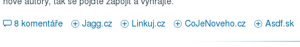

České a slovenské sociální sítě v Drupalu
Pokud jste si oblíbili české a slovenské sociální sítě: jako Jagg.cz, Linkuj.cz, Asdf.sk, CoJeNoveho.cz, tak Vám nesmí uniknout tento modul s jehož pomocí přivedete na své stránky nové návštěvníky.
Czech & Slovak Social Networks
Odkazy "Linkni to!", "Jaggni to!" se u nás objevují čím dál častěji a já jsem při tvoření Drupal.cz nesměl chybět. Chyběla mi však možnost, jak takové linky na tento server vložit, napsal jsem si na to tedy vlastní modul. Jmenuje se Czech & Slovak Social Networks a po instalaci pod každým Vaším článkem zobrazí odkaz pro přidání na již zmíněné servery. Modul je i do jisté míry konfigurovatelný, umožňuje:
- Omezit zobrazování odkazů jen na určité typy nodů. Např. zde se odkazy zobrazují pouze pro články, blogposty a diskusi ve fóru.
- Aktivovat či deaktivovat odkazy pro kterýkoliv ze zmíněných serverů
Nastavení mají zatím jedinou nevýhodu - servery jsou ručně vloženy do modulu a není možné bez zásahu do kódu přidat nové. To však rád udělám, stačí mi napsat, o jiných sociálních sitích v ČR/SR však zatím nevím. Zároveň přijímám patche na přidání těchto nastavení přímo na web. (Mám i představu jak, jen chybí čas to napsat...).
Instalace a šablonování
Při instalaci postupujte dle jednoduchého návodu na instalaci modulů. Po instalaci jděte do Administrace -> Nastavení -> -> cs_social_networks, kde zaškrtněte požadované sítě a typy obsahu.
Nyní by se u všech zadaných nodů měly zobrazovat linky. Pokud si je potřebujete nějak nastylovat, každý link má svou CSS třídu, tvořenou dle schématu: jmeno_serveru_link, tečky jsou nahrazeny za podtžítka. Nyní tedy existují čtyři třídy: jagg_cz_link, linkuj_cz_link, cojenoveho_cz_link, asdf_sk_link. Vzhled odkazům můžete dát jakýkoliv. Text odkazu tvoří pouze název serveru, můžete si ho však změnit pomocí lokalizace.

Stáhnout Czech & Slovak Social Networks
P.S.: Zájemcům můžu poskytnout kód, který na tomto serveru z linků dělá ten pěkný vyskakovací box, aby linků nebylo moc. Je to pouze úprava template.php, ale ne moc pěkná... :-)

Jeste existuje modul
Jeste existuje modul service links, ale v nejm uz nejsou pridane ceske site :)
Nevím jestli to dělá jen
Nevím jestli to dělá jen mně, ale v Opeře 9.0.2 mi to prostě nefunguje :(. Najedu na Linkni to! a nic. V IE7 i FF2 to funguje.
soc sit
To je chyba tady, ne
To je chyba tady, ne v modulu. Kouknu na to
http://mojelinky.sk/
dalo by sa pridat toto do tvojho modulu?
pridano v release
pridano v release 4.7.x-1.3 a 5.x-1.4
nainstaloval som tento
nainstaloval som tento modul (php5.2, drupal 4.7.5) a ked idem do admin->settings->CS tak mi vyhodi nasledovnu chybu:
warning: Missing argument 2 for drupal_get_form() in /home/html/rpg.sk/public_html/_sub/new/includes/form.inc on line 61.
co to moze byt?
ze jsem mozna pokazil
ze jsem mozna pokazil 4.7 release. podivam se na to
opraveno v 4.7.x-1.3
opraveno v 4.7.x-1.3
vypnutie zobrazovania na hlavnej stranke
ako sa da vypnut zobrazenie liniek na hlavnej stranke tak, aby ich zobrazovalo len pri celom clanku? mam na mysli nieco podobne ako v module FORWARD
ve forward je to jako
ve forward je to jako funkce, ktera se da nastavit. nevim jestli je to tak zadane, abych to tam musel programovat, nechcete to zkusit sam? kazdopadne jinak to muzete udelat treba tak, ze si vytvorite homepage.css a do nej date .cs_social_networks { display: none; } (plati pro verzi 5.x)
pak v page.tpl.php si pres <?php if ($page == 0) { ?><style …><?php } ?> includnete ten homepage.css jen pro uvodni stranku
vdaka vyskusam
vdaka vyskusam
ten if nefunguje, CSS mi
ten if nefunguje, CSS mi naincluduje aj na podstrankach, nie len ha hlavnej stranke… okrem toho to sice skryje linky ale znak „|“ medzi linkami nie…
btw. asdf.sk sa uz vola vybrali.sme.sk…
Chcelo by to aktualizaciu
Chcelo by to aktualizaciu ,)
A ceho jako?
A ceho jako?
aktualizace cs-social
Tohle stoji mozna za okouknuti: pridej.cz
Bylo by mozne zverejnit tu
Bylo by mozne zverejnit tu upravu pro vyskakovani jednotlivych siti v okynku, jak to funguje tady?
Implementace skriptu Přidej.cz do systému Drupal
Návod na zprovoznění / implementaci skriptu Přidej.cz (pridej.cz) do redakčního systému Drupal najdete na
http://kapsa.info/?…
Musí se to vložit do souboru node.tpl.php pod adresarem aktualni „theme“.
Takto lze vkládat do systému Drupal také jiné Social Networks / Social Bookmarks.
Toto je jeden z nejhorsich
Toto je jeden z nejhorsich zpusobu, jak to udelat…
Mozna je to nejhorsi
Mozna je to nejhorsi z hlediska systemu drupal… nicmene, napr. modul cs_social_network, co je volne ke stazeni take neni zrovna obratne reseni. Nemuzu mit pod kazdym clankem preci 5 odkazu na linkovaci sluzby. A chci jich tam mit co mozna nejvic, protoze nevim, kde vsude jsou ctenari meho webu zaregistrovani. Myslim, ze by bylo dobre tento modul prepracovat tak, aby nabizel na malem prostoru co nejvice sluzeb social bookmarking.
Zrejme dobra volba by byla vyjizdeci javascript lista s odkazy (jako zde na webu drupal.cz) na jednotlive sluzby tak, aby si clovek mohl tyto sluzby v administraci modulu nejen povolit, ale take sam pridat, protoze novych linkovacich sluzeb neustale pribyva.
zadost o prekovovani cs_social_networks
Vzhledem k tomu, ze i na tomto webu je pouzit jiny zpusob pro linkovani do sluzeb social networking/bookmarking, nebylo by skutecne nejlepsi prekodovat cely modul „cs_social_networks“? Myslim, ze vyznam techto sluzeb je dnes nemaly pro publikovani na webu. (Priorita: na malem prostoru velka variabilita-spousta linkovacich CS sluzeb + hlavni mezinarodni).
Nabizim svou pomoc. Bohuzel programovat v javascriptu ani php moc neumim. Muzu treba vybrat sluzby a najit k nim linky systemu registrace clanku.
Na tomto webu JE pouzit
Na tomto webu JE pouzit cs_social_networks. Ale je k nemu male tematko, ktere umoznuje ty JS linky. Ktery by urcite sly dnes jednoduseji diky jQuery.
Muzu to zkusit predelat. Ale uprimne, nevim kdy. Co s tim? Zkusit sehnat funding/sbirku a z toho zaplatit programatora? (At mne nebo nekoho jinyho?)
pár tipů
Pár tipů co přidat:
Zalinkuj.cz, Bookmarky.cz, Diskofil.cz, Mojelinky.sk, Vybrali.sme.sk, Google Bookmarks, Del.icio.us, Digg.com, Technorati.com, Stumbleupon.com, Furl.net, Blinklist.com, Reddit.com, Feedmelinks.com, YahooMyWeb, Newsvine.com, Soclializer, Ma.gnolia.com, Rawsugar.com, Squidoo, Spurl.net, Blinkbits.com, Netvouz.com, Rojo.com, Blogmarks.net, Shoadows.com, Simpy.com, Co.mments.com, Scuttle.org, Bloglines.com, Tailrank.com, Slashdot.org, Mister-wong.com, a Mister-wong.com.
:-)
Zdravím, kde je dostupný
Zdravím, kde je dostupný kód, ktorý by umožnil integrovať všetko pod jeden vyskakovací box (napr. linkni to)ako je spomínané v článku?
Nová linkovací služba
Zdravím, provozují novou linkovací službu www.blogus.cz (mimochodem běží na drupalu) a měl bych zájem o její přidání do tohoto modulu, mohli by jsme se nějak domluvit ? Popř. prosím o odpověď na email, děkují.
Poslat nový komentář